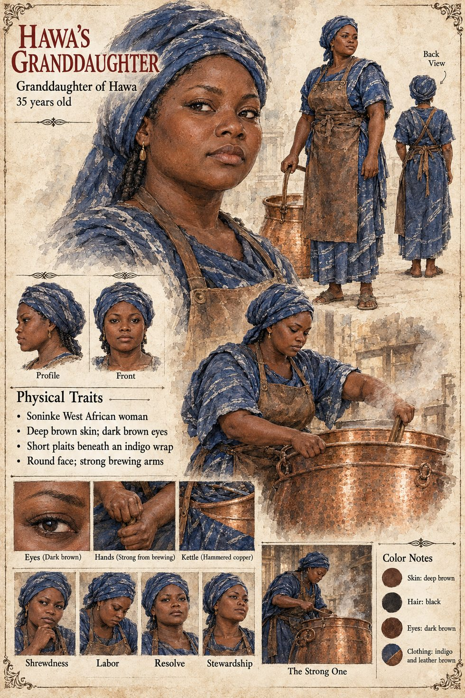

Hawa's Granddaughter
Brewer, owner of the dark ale's brewery · unnamed · 35 years old on her sheet
One sentence in the Epilogue, in the paragraph on what the war leaves behind as furniture. Hawa's granddaughter's brewery sold a dark ale for two hundred years under a name that had come to mean only the strong one. Hawa is known for her dark brew, Grey-Never, but the manuscript does not say that this is the same ale, does not give its later name, and does not say how the brewery came to her or when. It is one of the small survivals of the dog: in the same paragraph, to pay the long debt comes to mean buying a round for someone one has wronged, and nobody remembers why.
The manuscript gives her a grandmother, a brewery and two hundred years; no name, age, face or build. The sheet's age of 35, deep brown skin, dark brown eyes, short plaits beneath an indigo wrap, round face, strong brewing arms and hammered-copper kettle are its own, as are its panels Shrewdness, Labor, Resolve and Stewardship and its scene The Strong One.
“Hawa's granddaughter's brewery sold a dark ale for two hundred years”